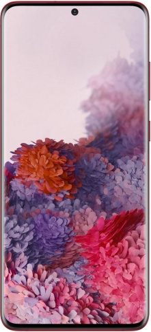

Samsung Galaxy S20
Краткое описание товара
Невероятная 108 МП камера. Фантастический 100-кратный зум. Фото из видео 8К. Переходите на новый уровень съёмки и мощности с инновационным флагманом Galaxy S20!
Подробно описание товара
Встречайте Samsung Galaxy S20 | S20+ | S20 Ultra. Cнимайте в революционном разрешении 8K и получайте сверхчеткие фотографии высокого качества прямо из видео. Добавьте к этому надежную защиту Samsung Knox, интеллектуальный аккумулятор, супермощный процессор и большой объем памяти для всех ваших файлов. Откройте новую главу в истории мобильных устройств.
В новых смартфонах Samsung отказались от рамок и оставили лишь крошечное отверстие для камеры, чтобы ничто не отвлекало вас от погружения в контент на безграничном экране.
Экран с частотой обновления 120 Гц и ультрабыстрым откликом делает скроллинг невероятно плавным, а высокочувствительный сенсор обеспечивает игровой процесс без малейших задержек. Вы должны это увидеть.
Характеристики товара
- Производитель Samsung
- Диапазоны GSM 850, 900, 1800, 1900
- Интернет GPRS, EDGE, 3G, 4G
- Диагональ (дюйм) 6.7
- Разрешение (пикс) 3200×1440
- Встроенная память (Гб) 128
- Фотокамера (Мп) 64 + 12 + 12 + 3D-камера TOF (четыре основные камеры)
- Количество ядер 8
- Оперативная память (Гб) 8
- Поддержка карт памяти MicroSD, MicroSDHC, MicroSDXC
- Слот для карты памяти совмещенный с одной из SIM-карт
- Операционная система Android 10.0
- SIM-карта nano-SIM
- Аккумулятор (мАч) 4500
- Вес (г) 186